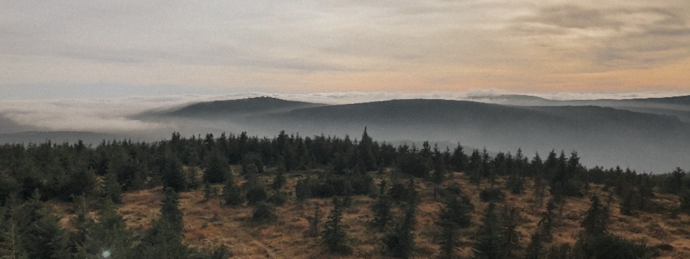
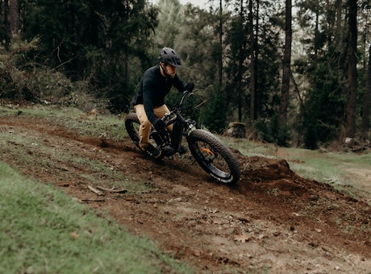
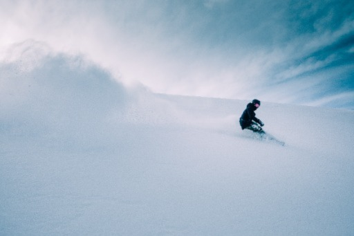
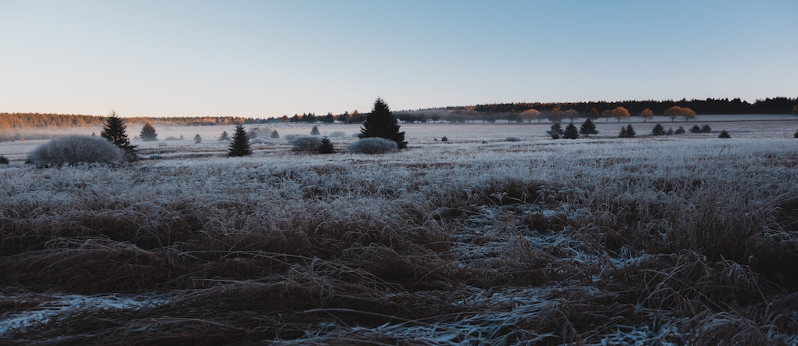
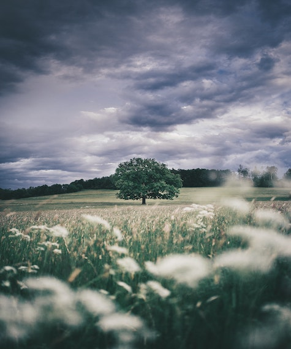

Kde Orlické hory najdete?
Malebný region Orlických hor a Podorlicka leží v severní části východních Čech při polské hranici. Nejvyšší horou je Velká Deštná (1115 m. n. m.). Pásmo hor začíná nad městem Náchod, dále pokračuje přes střediska jako je Rokytnice a Deštné až k obci Jablonné nad Orlicí a Bartošovice. Zde u Zemské Brány pásmo Orlických hor končí a je už na dohled další pohoří Králického Sněžníku.
Orlické hory v létě
Za Vaši návštěvu ale stojí Orlické hory i v létě. Kopce jsou protkány sítí naučných stezek, turistických značek a cyklotras ideálních pro rodiny s dětmi i zkušené turisty a cyklisty. Milovníci vojenské historie zajásají nad prohlídkou zdejší linie bunkrů a několika přístupných pevností, z nichž je nejznámější Hanička.
Orlické hory v zimě
Orlické hory jsou navštěvované především v zimě lyžaři pro svá kvalitní lyžařská střediska, z nichž jsou nejnavštěvovanější Deštné a Říčky, které Vás překvapí příznivými cenami a vysokou kvalitou nabízených služeb. Milovníky bílých stop jistě potěší také velké množství upravovaných běžkařských tras.
Dovolená na horách
Orlické hory jsou ideálním místem pro Vaši dovolenou. Množství turistických zajímavostí je doplněno také širokou nabídkou kvalitního ubytování. Naleznete zde luxusní hotely s bazénem a wellness, menší horské hotýlky, příjemné rodinné penziony, moderní apartmány, ale také typické útulné horské chalupy. Z rozličné možnosti jistě uspokojí každého návštěvníka tohoto horského regionu a přispějí pohodovému strávení dovolené nebo pouze prodlouženého víkendu.
 Poznejte všechny oblasti regionu
Orlické hory je možné rozdělit na dvě části s centrem v Deštné. Oblast od Olešnice k Deštné je pomyslnou branou Orlických hor. Pásmo táhnoucí se na opačnou stranu od Deštné k Rokytnici pak představuje pravé Orlické hory s polozapomenutými vesničkami a hlubokými lesy.